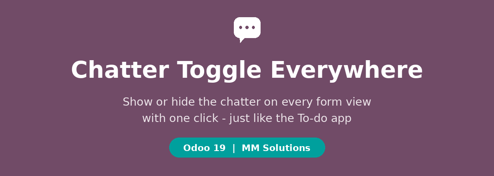
The To-do app has a handy button to show or hide the chatter panel. This module brings that exact button to every form view in Odoo - Sales, Invoices, Tasks, CRM, Helpdesk, everywhere.
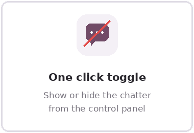
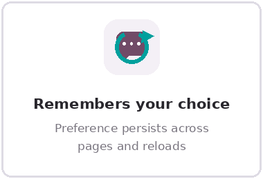
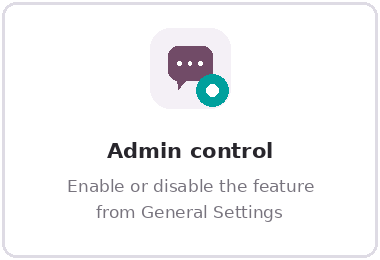
The toggle sits next to the pager on every form, with the alt + d hotkey.
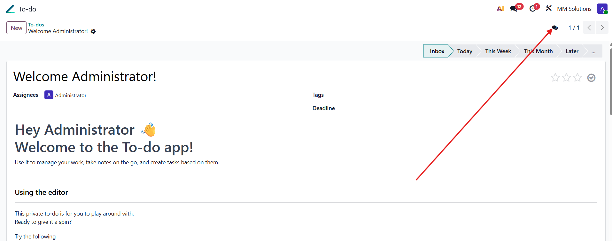
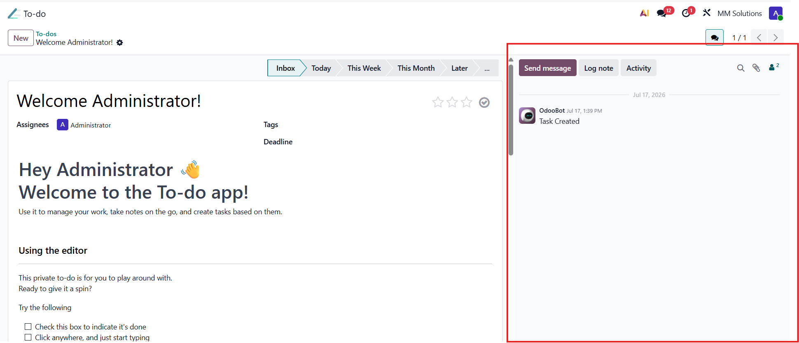
Hide the chatter and the form sheet expands to use your whole screen.
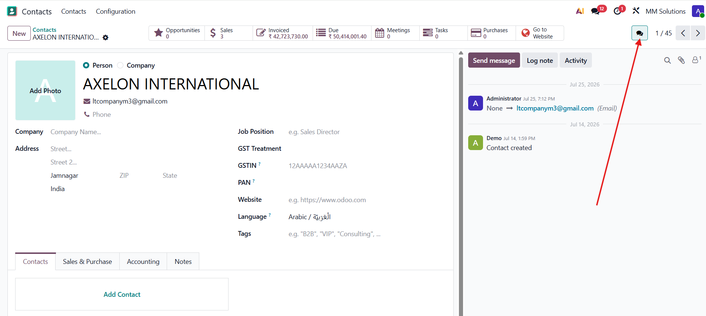
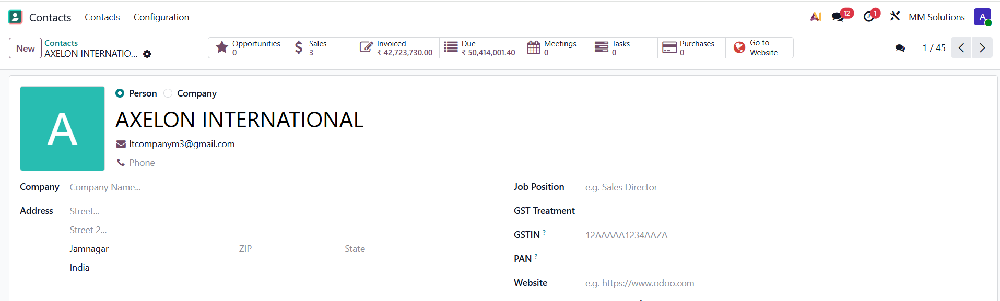
No configuration per app or per model. Every form with a chatter gets the button.
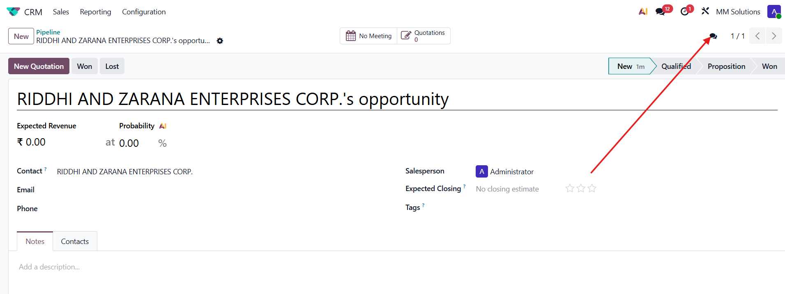
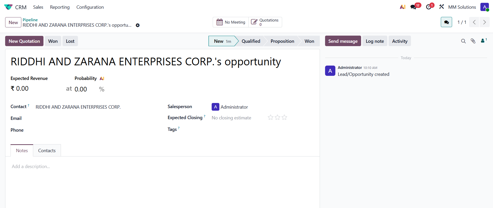
Enable or disable the button for the whole database from General Settings.
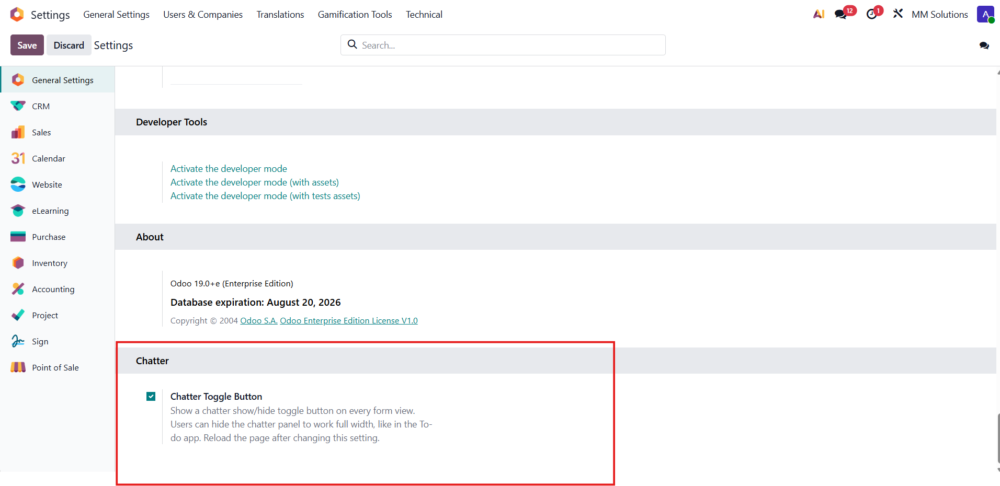
| 1 | Install the module. The toggle is enabled by default. |
| 2 | Open any record - the chatter button appears next to the pager. |
| 3 | Click it (or press alt + d) to hide or show the chatter. Your choice is remembered. |
| 4 | To turn the feature off completely, disable it in Settings > General Settings > Chatter. |
Practical Odoo modules built from 10 years of real implementations.
Support: midhunmmkmr@gmail.com